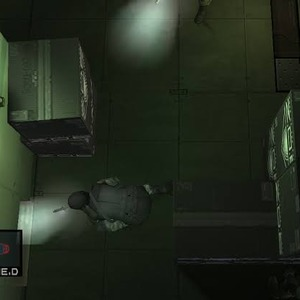
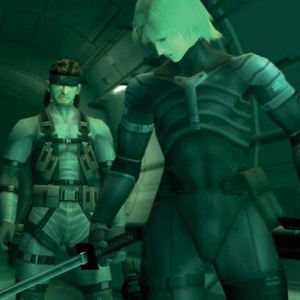

The plot of Metal Gear Solid 2
Metal Gear Solid 2: Sons of Liberty follows Solid Snake and Raiden as they confront a terrorist group called the Sons of Liberty, led by Solidus Snake. The game is set in two main locations: the Big Shell, an offshore clean-up facility, and the Tanker, a cargo ship. The story explores themes of information control, identity, and the consequences of war. Players navigate complex environments, engage in stealth-based gameplay, and uncover a conspiracy involving the Patriots, a secret organization manipulating global events.

The new main characters in Metal Gear Solid 2
Metal Gear Solid 2 follows two main characters. Raiden is a rookie FOXHOUND operative with only virtual-reality training, sent to the Big Shell facility to rescue the President from terrorists. As the mission unfolds, he learns the Patriots have been manipulating his memories and his life. Solid Snake, the hero of the first game, appears under the alias "Iroquois Pliskin" and secretly aids him. Older and more weary, Snake acts as a mentor, pushing Raiden to question what is real and to find his own identity and purpose, rather than simply following orders. Together, they uncover the truth.

The hardware used to play Metal Gear Solid 2
The PS2, made by the company SONY, launched in 2000, brought a faster processor, more memory, and DVD storage. For MGS2, that meant detailed characters, bouncing shells, shattering bottles, smarter guards, real-time cutscenes, and first-person aiming. It didn't invent 3D stealth, but it let Kojima's team build the game they'd envisioned.